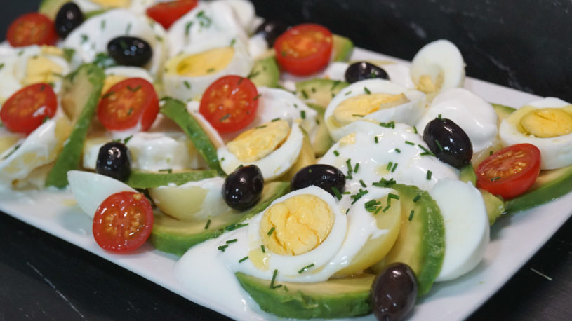
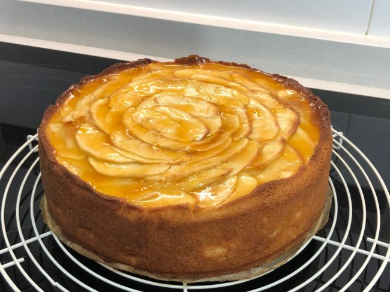

Ensalada de patata y aguacate. Sencilla y riquísima: preparación de la receta
23 de Marzo de 2019
1.- Cuece las patatas junto con los huevos. Coloca las patatas y los huevos en un cazo al fuego bien cubiertos de agua. Espera 10 minutos desde que el agua rompa a hervir para retirar los huevos. Deja las patatas cociendo hasta que al pincharlas con un tenedor las notes blandas.
2.- Prepara la mayonesa. Mezcla los ingredientes en el vaso de la batidora. Añade la leche, el aceite, una pizca de sal, y una o dos cucharaditas de vinagre. Sin mover la batidora de la base, empieza a batir hasta que la mayonesa quede ligada. Añade una puntita de ajo y sigue batiendo para integrarlo. Ya tienes la mayonesa lista para usar. Guárdala en el frigorífico hasta el momento de utilizarla.
3.- Pela los ingredientes. La piel de las patatas se desprende con mucha facilidad simplemente con la mano, ayúdate de un cuchillo si no. Quita el rabito al aguacate, córtalo a lo largo por la mitad, quita el hueso y pélalo.
4.- Corta los ingredientes. Corta las patatas en rodajas, el aguacate en gajos y rocíalo con zumo de limón para que no se oxide. Corta los huevos en rodajas.
5.- Monta la ensalada. Cocola en una bandeja una pase de patata, pon encima una capa de mayonesa. Encima, el aguacate, el huevo y unos tomatitos cherry cortados por la mitad. Aliña los huevos con un poquito de sal y un poquito de aceite de oliva. Puedes poner también unas aceitunas negras. Para finalizar, espolvorea por encima comino picado o perejil.
Puedes mezclar todo para servir o servirla sin mezclar y enseñar los ingredientes, tú eliges.
Tarta de manzana fácil
23 de Abril de 2019
1.- Prepara las manzanas. Pélalas y córtalas en cuartos. Quita el corazón y córtalas en finas láminas que te servirán para en interior y para la decoración. Reserva las láminas de manzana.
2.- Precalienta el horno a 175 grados con calor arriba y abajo y sin ventilador.
3.- Prepara el molde. Yo he utilizado un molde desmontable que mide 22 centímetros de diámetro por 6 de altura. Forra la base con papel vegetal, cierra el molde y corta el sobrante. Engrasa bien las paredes y la base con un poco de mantequilla. Reserva el molde.
Para montar la tarta de manzana:
4.- Prepara la tarta. Coloca los 3 huevos en un bol y añade el azúcar. Bate con las varillas durante 4 o 5 minutos. Añade la ralladura de uno o medio limón, y el zumo de medio limón. Añade también el yogur, natural o de sabor, y el medio vaso de aceite. Bate de nuevo. Por último, añade la harina junto con la levadura química o polvo de hornear a través de un tamiz. Bate de nuevo hasta que obtengas una masa integrada.
5.- Aparta, más o menos, la mitad de las láminas de manzana porque serán para la decoración. Parte el resto en trozos más pequeños para incorporarla a la masa. Incorpora la manzana a la masa y mezcla bien.
6.- Vierte la masa en el molde, engrasado previamente, y procura que la manzana quede bien repartida. Da un pequeño gesto al molde para asentar la masa. Decora con las láminas de manzana a tu gusto. Mira en el vídeo cómo la he decorado yo. He ido encadenando una lámina con otra.
7.- Introduce la tarta en el horno precalentado a 175 grados, con calor arriba y abajo y sin ventilador. La he tenido en el horno 50 minutos. Asegúrate pinchando con un palito, hasta que salga limpio, si se ha hecho por dentro. Retira la tarta del horno y, sin esperar a que se enfríe, cúbrela con una fina capa de mermelada de melocotón. Si la extiendes cuando la tarta está aún caliente, la mermelada se extiende con más facilidad.
8.- Desmolda la tarta con cuidado y, ayudándote del mismo papel vegetal, colócala sobre una rejilla para que se enfríe.